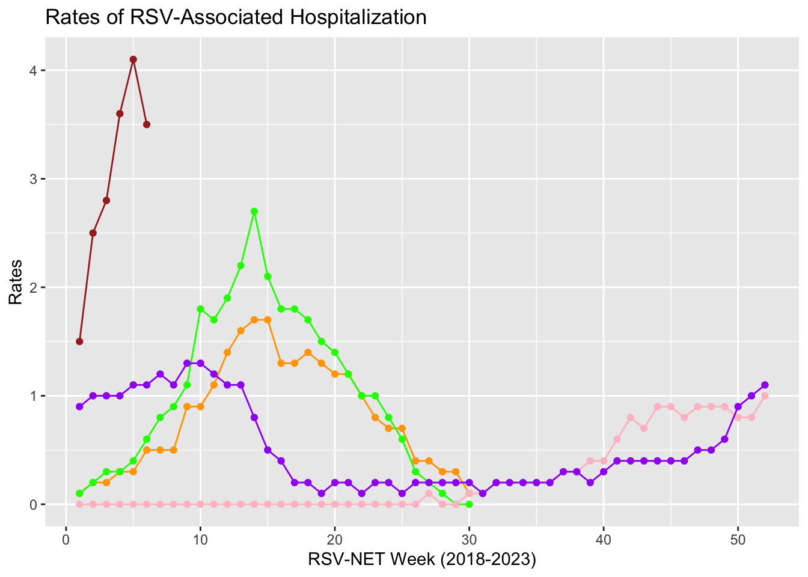

3 Data Analysis and Results
In this part, a model to predict RSV hospitalization rate is trying to be established. The question is what range of data we should be included to better predict the RSV rate, one year, or two year. This question will be solved in this part.
Before that, the data distribution of RSV hospitalization rates from 2018 to now is displayed below.
Note: (1) color orange: year 2018-2019; color green: year 2019-2020; color pink: year 2020-2021; color purple: 2021-2022; color brown: 2022-2023
(2)In 2018-2020, data shown is from October 1 to April 30 each year; In 2020-now, data is from October 1 to the next year October 1 each year.
(3)In year 2020-2021, because of Covid restriction and mask mandate, there are fewer cases.
From the graph below, we notice that data is not linear distributed, and curved lines are noticed. So, polynomial regression is selected to be our approach.
3.1 One year-to-date data Analysis
A model built for 1 year-to date data follows the following steps.
3.1.1 Data Pre-processing and Distribution
Data was examined before our modeling, including checking for missing values and removing outlines.
Week oneyeartodate
0 0 One-year-to-date data distribution with a curve line was shown below. We can see that the straight line is unable to capture the patterns in the data. Data is being under-fitting.
Code
ggplot(data1,aes(x=Week,y=oneyeartodate))+geom_point(data=data1,aes(x=Week,y=oneyeartodate),color="blue")+stat_smooth(method=lm,formula=y~poly(x,1,raw=TRUE))+
labs(x="RSV-NET week Week 46th,2021-Week 45th,2022",y="Rates",title="Rates of RSV-Associated Hospitalization One year-to-date")
3.1.2 Polynomial Regression and results
To overcome under-fitting, we generate a higher order equation to increase the complexity of the model. To do that, we add powers of the original features as new features through polynomial regression analysis. Data was split into train data and test data, and a comparison was made to decide which degree of model is the best fit for the data from Nov 2021 to Nov 2022.
Code
my_data<-data1
#split data into training and test
set.seed(150)
training.samples <-data1$oneyeartodate %>%
createDataPartition(p=0.8,list=FALSE)
train.data<-my_data[training.samples, ]
test.data<-my_data[-training.samples, ]
#build model
model<-lm(oneyeartodate~poly(Week,6,raw=TRUE),data=train.data)
summary(model)
Call:
lm(formula = oneyeartodate ~ poly(Week, 6, raw = TRUE), data = train.data)
Residuals:
Min 1Q Median 3Q Max
-0.64803 -0.09377 0.00132 0.10147 0.53149
Coefficients:
Estimate Std. Error t value Pr(>|t|)
(Intercept) 9.166e-01 6.768e-01 1.354 0.1843
poly(Week, 6, raw = TRUE)1 3.117e-01 2.695e-01 1.157 0.2553
poly(Week, 6, raw = TRUE)2 -7.364e-02 3.657e-02 -2.014 0.0518 .
poly(Week, 6, raw = TRUE)3 5.399e-03 2.292e-03 2.356 0.0242 *
poly(Week, 6, raw = TRUE)4 -1.781e-04 7.255e-05 -2.455 0.0192 *
poly(Week, 6, raw = TRUE)5 2.714e-06 1.126e-06 2.411 0.0213 *
poly(Week, 6, raw = TRUE)6 -1.530e-08 6.796e-09 -2.252 0.0307 *
---
Signif. codes: 0 '***' 0.001 '**' 0.01 '*' 0.05 '.' 0.1 ' ' 1
Residual standard error: 0.2112 on 35 degrees of freedom
Multiple R-squared: 0.9606, Adjusted R-squared: 0.9538
F-statistic: 142 on 6 and 35 DF, p-value: < 2.2e-16Code
#predict using the model
predictions<-model %>% predict(test.data)
#error
error<-RMSE(predictions,test.data$oneyeartodate)We listed the Multiple R-squared and root mean square error (RMSE, or error) when the degree of polynomials from 1 to 10. We can observe with the increase of the degree, multiple r-square increase too. While error goes down and then goes up again when we keep adding the powers of the original features. That incease of the error is caused by data overfitting, the model try to pass through most of the data points.
The best model we looking for is the one with high multiple R square (0.9606) and low RMSE (0.16), so we select the model with degree of 6.
3.2 Two year-to-date data Analysis
We also analysis the date from Nov, 2020 to Nov, 2022 following the same steps, and try to see if including more data points will get a better prediction model.
3.2.1 Data Pre-processing and Distribution
Two-year-to-date data distribution with a curve line was shown below. Data is under fitted, polynomial regression is needed to increase the complexity of the model.
Week twoyeartodate
0 0 Code
ggplot(data2,aes(x=Week,y=twoyeartodate))+geom_point(data=data2,aes(x=Week,y=twoyeartodate),color="purple")+stat_smooth(method=lm,formula=y~poly(x,1,raw=TRUE))+
labs(x="RSV-NET week Week 46th,2020-Week 45th,2022",y="Rates",title="Rates of RSV-Associated Hospitalization two year-to-date")3.2.2 Polynomial Regression and results
The best model for the most recent two year data we select is at the degree of 5 with multiple r-square 0.92 and error 0.24.
Code
my_data2<-data2
#split data into training and test
set.seed(150)
training.samples <-data2$twoyeartodate %>%
createDataPartition(p=0.8,list=FALSE)
train.data2<-my_data2[training.samples, ]
test.data2<-my_data2[-training.samples, ]
#build model
model2<-lm(twoyeartodate~poly(Week,5,raw=TRUE),data=train.data2)
summary(model2)
Call:
lm(formula = twoyeartodate ~ poly(Week, 5, raw = TRUE), data = train.data2)
Residuals:
Min 1Q Median 3Q Max
-0.5665 -0.1158 0.0259 0.1323 0.6496
Coefficients:
Estimate Std. Error t value Pr(>|t|)
(Intercept) 1.069e-01 1.526e-01 0.700 0.48573
poly(Week, 5, raw = TRUE)1 -2.892e-02 2.961e-02 -0.977 0.33156
poly(Week, 5, raw = TRUE)2 8.463e-04 1.752e-03 0.483 0.63048
poly(Week, 5, raw = TRUE)3 4.486e-05 4.235e-05 1.059 0.29274
poly(Week, 5, raw = TRUE)4 -1.265e-06 4.444e-07 -2.846 0.00565 **
poly(Week, 5, raw = TRUE)5 7.821e-09 1.683e-09 4.646 1.33e-05 ***
---
Signif. codes: 0 '***' 0.001 '**' 0.01 '*' 0.05 '.' 0.1 ' ' 1
Residual standard error: 0.2338 on 79 degrees of freedom
Multiple R-squared: 0.92, Adjusted R-squared: 0.9149
F-statistic: 181.6 on 5 and 79 DF, p-value: < 2.2e-16Code
#predict using the model
predictions2<-model2 %>% predict(test.data2)
#error
error<-RMSE(predictions2,test.data2$twoyeartodate)By comparison the two year-to-date data with the one year-to-date data, it shows that building RSV hospitalization rate model containing most recent one year data create the best prediction model.
3.3 Model performance
The model for RSV hospitalization rate from Nov, 2021 to Nov, 2022 was formed as:
RSV Hospitalization Rate = 0.917 + 0.312Week - 0.074Week2 + 0.0054Week3 - 0.00018Week4 + 0.0000027Week5 - 0.000000015Week6
Estimate Std. Error t value Pr(>|t|)
(Intercept) 9.165688e-01 6.768202e-01 1.354228 0.18434303
poly(Week, 6, raw = TRUE)1 3.116708e-01 2.694685e-01 1.156613 0.25526403
poly(Week, 6, raw = TRUE)2 -7.363560e-02 3.656703e-02 -2.013716 0.05177789
poly(Week, 6, raw = TRUE)3 5.399174e-03 2.292002e-03 2.355659 0.02422194
poly(Week, 6, raw = TRUE)4 -1.781037e-04 7.255321e-05 -2.454801 0.01921034
poly(Week, 6, raw = TRUE)5 2.713662e-06 1.125680e-06 2.410688 0.02131056
poly(Week, 6, raw = TRUE)6 -1.530307e-08 6.795953e-09 -2.251792 0.03071366When we compare the actual hospitalization with the predicted value from our model, we can get the numbers as follow. We can conclude that the model created is a good fit. It also can be shown at the graph below.
Code
compare <-data.frame(actual=test.data$oneyeartodate,predicted=predictions)
head(compare,n=10) actual predicted
1 1.2 1.15982773
2 1.1 1.28579756
3 0.5 0.67668810
4 0.2 0.42365176
5 0.1 0.07749228
6 0.2 0.12270299
7 0.2 0.18344956
8 0.3 0.27587346
9 0.3 0.24948406
10 2.5 2.16341891Code
modelPerformance=data.frame(RMSE=RMSE(predictions,test.data$oneyeartodate),R2=R2(predictions,test.data$oneyeartodate))
ggplot(train.data,aes(Week,oneyeartodate))+geom_point()+stat_smooth(method=lm,formula=y~poly(x,6,raw=TRUE))3.4 Predict the future value
We have got our model with the equation for the RSV hospitalization rate data in the recent one year: RSV Hospitalization Rate = 0.917 + 0.312Week - 0.074Week2 + 0.0054Week3 - 0.00018Week4 + 0.0000027Week5 - 0.000000015Week6
On the ground of this model, we predicted the future RSV hospitalization rates in the next three months. A table is listed below to show the trend. Following the trend in our model, rates keep going up and a rate of 9 could be reached at the beginning of next year.
Code
newcases <- data.frame(Week = c(53,54,55,56,57,58,59,60,61,62,63,64))
predict(model,newcases) 1 2 3 4 5 6 7 8
4.739955 5.355397 5.982861 6.608093 7.213810 7.779410 8.280680 8.689482
9 10 11 12
8.973439 9.095602 9.014112 8.681845 | Week | Actual date | Rates |
|---|---|---|
| 1: 46th week | 11/14/2022-11/20/2022 | 4.74 |
| 2: 47th week | 11/21/2022-11/27/2022 | 5.36 |
| 3: 48th week | 11/28/2022-12/4/2022 | 5.98 |
| 4: 49th week | 12/5/2022-12/22/2022 | 6.61 |
| 5: 50th week | 12/12/2022-12/18/2022 | 7.21 |
| 6: 51th week | 12/19/2022-12/25/2022 | 7.78 |
| 7: 52th week | 12/26/2022-1/1/2023 | 8.28 |
| 8: 1st week | 1/2/2023-1/8/2023 | 8.69 |
| 9: 2nd week | 1/9/2023-1/15/2023 | 8.97 |
| 10: 3rd week | 1/16/2023-1/22/2023 | 9.10 |
| 11: 4th week | 1/23/2023-1/29/2023 | 9.01 |
| 12: 5th week | 1/30/2023-2/5/2023 | 8.68 |